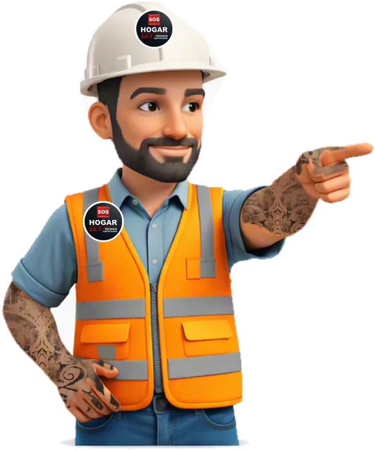

Tu casa en manos de un técnico formado.
Electricidad, gasfitería, techumbres, carpintería y pintura. Urgencias 24/7 y cotización sin compromiso.


Un solo técnico para todo tu hogar
Toca un servicio para ver qué incluye y cotizarlo directo por WhatsApp.
Electricidad
Fallas, enchufes, tableros y circuitos nuevos.
Ver qué incluye
- Cambio de enchufes, interruptores y focos LED
- Lámparas, apliqués y proyectores exteriores
- Circuitos independientes para horno o aire acondicionado
- Diagnóstico de tableros, automáticos y diferenciales
- Montaje eléctrico industrial (374 h SENCE)
Gasfitería
Fugas, destapes, grifería y calefón.
Ver qué incluye
- Llaves que gotean: gomas y vástagos
- Destape de lavaplatos, lavamanos, tinas y sifones
- Grifería y monomandos en baño o cocina
- Fugas en cobre, PVC o PEX y fugas ocultas
- Mantención y regulación de calefón
Techumbres
Goteras, canaletas, cubiertas y aislación.
Ver qué incluye
- Limpieza de canaletas y bajadas
- Goteras con sellante o fijaciones nuevas
- Planchas de zinc, fibrocemento o policarbonato
- Aislación térmica y reparación de cerchas
- Trabajo en altura certificado ACHS
Carpintería y cerrajería
Puertas, chapas, muebles y pisos.
Ver qué incluye
- Ajuste de bisagras, rieles y correderas
- Cambio de chapas, pestillos y cerraduras trabadas
- Soportes de TV, repisas y barras de cortina
- Muebles modulares a medida
- Pisos flotantes, vanos, puertas y dinteles
Terminaciones y pintura
Cerámica, pintura y sellados.
Ver qué incluye
- Parches en vulcanita o internit
- Cerámicas, azulejos y porcelanatos
- Sellos con silicona antihongos
- Raspado, masillado y preparación completa
- Pintura de muros, cielos y fachadas
Estructuras metálicas
Soldadura, rejas y portones.
Ver qué incluye
- Pasadores, pestillos y bisagras de rejas
- Protecciones de ventanas y marcos soldados
- Estructuras metálicas medianas y pesadas
- Protecciones para maquinaria (experiencia minera)
Servicio técnico
Lavadoras, bombas, herramientas y TV.
Ver qué incluye
- Filtros y bombas de desagüe de lavadoras
- Correas, rodamientos y presostatos
- Bombas de agua domiciliarias
- Herramientas eléctricas: carbones y cables
- Smart TV sin imagen: cambio de backlight
Pintura y desabolladura automotriz
Tu auto como nuevo, con terminación de taller.
Ver qué incluye
- Desabollado y reparación de tapabarros quebrados
- Reinstalación de máscaras, molduras y parachoques
- Igualación de tono de pintura
- Sellado y terminación final

Resultados en Los Andes y alrededores
Fotos y videos de obras terminadas. Toca cualquiera para verla en grande.
Formado para hacerlo bien
No solo oficio: 994 horas de formación técnica y experiencia en minería, industria y construcción.

Maestro M1 · Los Andes. Más de 28 años en construcción, electricidad, gasfitería y mantención.
Aprobado con nota 6,7 y 100% de asistencia.
SENCE · Asiva · 2014
AprobadoSENCE · Incatal · 2021 · 100% asistencia
AprobadoFormación para personas trabajadoras · 2025 · nota 7,0
AprobadoReconocimiento de equipo en ICAFAL, Los Andes (2023-2024).
Seguridad- Anglo American · División Chagres (aislación térmica)
- ICAFAL · Maestro M1 carpintero
- Ski Portillo · mantención a 2.900 msnm
- PROMET · pintura
- ASC Ingeniería · estructuras
- Independiente desde 2024
Simple, claro y sin sorpresas
Por WhatsApp, llamada o el formulario. Si puedes, manda una foto del problema.
Precio claro antes de empezar. La cotización es sin compromiso.
Trabajo limpio, con garantía técnica y seguimiento después del servicio.
Llego a todo el Valle del Aconcagua
"Llamé a las 2 AM por una fuga de gas. Llegó en menos de 45 minutos y resolvió todo. Un profesional de verdad."
"Le encargué la remodelación del techo y la carpintería. Trabajo impecable, en plazo y con materiales de primera."
"Técnico con formación real, trabaja bajo norma y entrega informe. Exactamente lo que necesitábamos para el edificio."
Cotiza sin compromiso
Para urgencias llama o escribe por WhatsApp. Para proyectos, completa el formulario y se abrirá WhatsApp con tus datos listos para enviar.